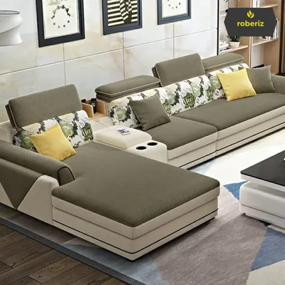
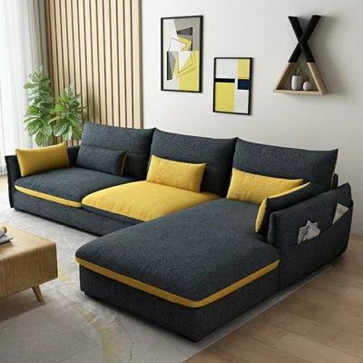
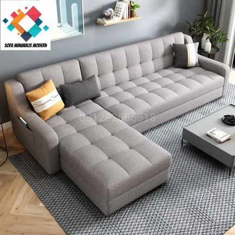
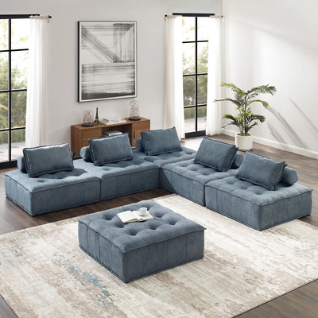
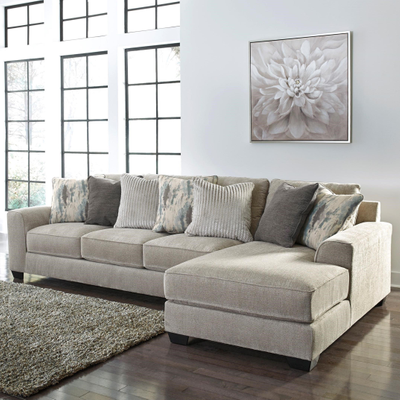

Nikmati kenyamanan, kemewahan dan kualitas. Sofa kami dirancang dan diproduksi original tim Sofaque, menghadirkan keahlian berkualitas dan kreasi abadi untuk Anda dengan harga terjangkau. Sejak 2015, Jawa Barat, Sofaque adalah produsen sofa terpadu yang mengkhususkan diri dalam desain, manufaktur, perakitan, grosir dan eceran sofa yang dikonseptualisasikan. Pionir sofa modern dan kontemporer di Indonesia.
Bahan Kain
Kami menggunakan bahan yang super premium untuk menghadirkan karakter dan kesan yang berbeda-beda untuk pelanggan kami. Berikut adalah contoh bahan yang kami gunakan.
Corleone
Barzini
Stracci
Tattaglia
Cuneo
Produk

Vito
Jenis sofa yang digabungkan dengan sofa lain, bisa dibilang kombinasi dari beberapa sofa yang disatukan untuk menciptakan penataan tempat duduk ruang tamu terbaik, biasanya 3-5 pieces.
Ukuran sofa yang dibuat harus pas dengan ruang tamu karena semakin besar keluarga, lebih banyak sofa yang kamu butuhkan. Bentuk yang terkenal adalah L-shape and U-shape.

Tessio
Model sofa ini mempunyai lengan dengan bulat klasik dan kadang juga dinamakan “Grandma’s couch” yang berarti sofa tersebut adalah sofa klasik yang bisa bertahan sangat lama, bahkan sampai bertahun-tahun.
Pada jaman dulu, sofa ini akan disertai dengan sarung atau pelapis bunga atau bermotif. Saat ini, hampir semua memakai linen putih dan fabric neutral yang membuat ini terlihat mahal.

Clemenza
Clemenza style dirancang untuk kenyamanan dan mempunyai bentuk tegas, berisi dan kokoh. Biasanya terdiri dari tiga dudukan (3-seater) dengan bantal punggung untuk masing-masing dudukan.
Bagian lengan atau armrest lebih rendah dari sandaan atau backrest dengan bentuk melingkar maupun persegi.
Clemenza terus menjadi desain sofa yang populer saat ini karena mempunyai karakter kasual, khas gaya desain American style dan Clemenza style sangat mengedepankan kenyamanan. Kamu dapat membeli sofa gaya Clemenza dalam berbagai ukuran, warna, dan bahan.

Santino
Sofa santino dibuat terkenal oleh desainer interior Billy Baldwin, tetapi ada banyak iterasi sofa tuksedo. Yang membedakan tuksedo dari gaya lain adalah bentuknya yang kotak.
Lengannya hampir selalu sama tinggi dengan punggung dan kakinya berlapis atau terbuka. Sofa itu bersih dan berjajar geometris, dan sering dilapisi kain.
Fredo
Fredo berasal dari istilah “chaise lounge,” yang berarti kursi panjang. Kursi ini untuk satu orang, dan kursi ini dimaksudkan untuk bersandar sebagai kursi dan bangku kaki dalam satu kursi.
Chaises selalu memiliki punggung dan mungkin memiliki satu, dua atau tanpa lengan. Beberapa chaises berkontur, membuat terlihat lebih enak untuk berbaring dan bersantai.

Michael
Michael berbentuk ramping dengan lengkungan menjulang pada bagian tengah sandarannya.
Lengkungan khas ini yang menyerupai punggung unta, sesuai namanya, Michael. Lengan setinggi sandaran punggung dengan ujung persegi dan bagian kaki terekspos serta tidak memiliki bantal punggung.
Sofa camel adalah pilihan tepat bagi penggemar gaya tradisional dan dapat menciptakan tampilan elegan di rumah mana pun.